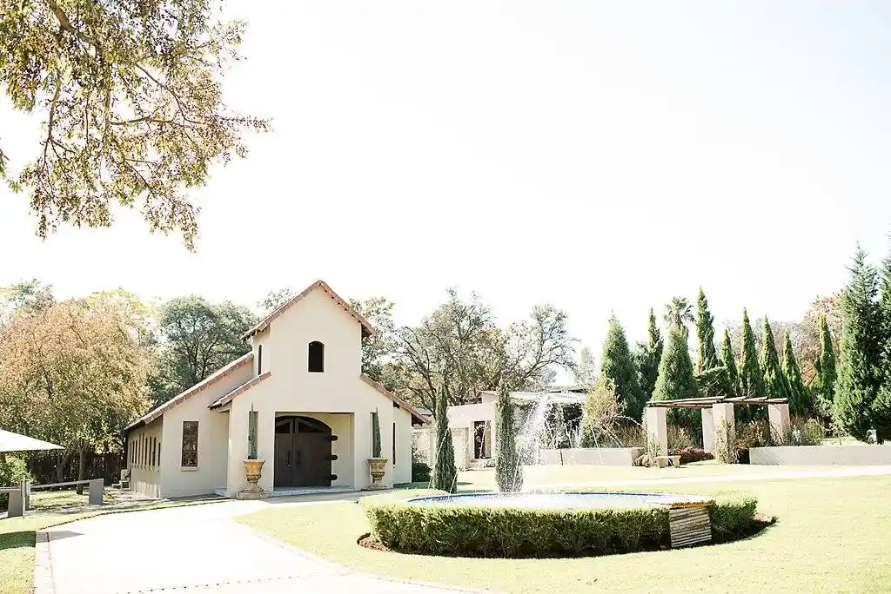

Everything you need to know
The Day, The Venue & Your Seat
Thursday, 21 October 2027 at Geko Ridge Wedding Venue, near Pretoria, Gauteng.
The day at a glance
Gates open & parking
Please follow the attendant's directions. Parking is on the lawn to the left of the main gate.
Guests arrive & are seated
Welcome drinks are served on the ridge terrace. Ushers will help you find your seat.
Ceremony
The ceremony takes place in the open-air chapel. Please be seated by 14:50.
Photos & canapés
Family photographs on the ridge, with canapés and a live acoustic duo on the terrace.
Reception & dinner
Guests move into the glasshouse reception hall for speeches and a plated dinner.
Dancing
First dance, then the floor is yours. The bar closes at 23:30.
Music ends & guests depart
Strict venue curfew. Shuttle details will be shared closer to the day.
Geko Ridge Wedding Venue
Geko Ridge sits on a working farm on the ridge line north-east of Pretoria, about 45 minutes from the city centre. The ceremony takes place in an open-air chapel facing the valley, and the reception is held in the adjoining glasshouse hall.
- Address
- Geko Ridge Wedding Venue, Ridge Road, near Pretoria, Gauteng
- Travel time
- Approximately 45 minutes from Pretoria CBD
- Parking
- Free on-site parking with an attendant, including accessible bays
- Accessibility
- Step-free route from parking to the chapel and reception hall
- Weather plan
- The chapel has a covered canopy; the reception is fully indoors
- Accommodation
- Six guest cottages on the farm — ask us before you book

Venue rules at Geko Ridge
Geko Ridge is a family farm as well as a wedding venue. A few house rules keep it that way.
- No outside alcohol. The venue is fully licensed and holds a strict corkage policy.
- Music ends at midnight. The farm's noise curfew is 00:00 and is enforced by the venue.
- No confetti, rice or glitter. Please use the dried petals and bubbles provided.
- Smoking only in designated areas. There is a marked smoking terrace beside the reception hall.
- No open flames or candles without written approval. Battery tea lights are welcome.
- Children are welcome but must be supervised by a parent at all times.
- No drones without prior permission — the neighbouring property is a working farm.
- Decor setup is allowed from 09:00 on the day. Nothing may be nailed, stapled or glued.
- Please take your belongings home. The venue is not responsible for items left behind.
Guest list & seating plan
Seats are assigned by how you know us: immediate family sits closest to the front, extended family behind them, and friends behind that. There are 60 seats in total — eight per row, four on each side of the aisle.
Loading the guest list…
The seating chart
Row 1 is closest to the front. Green seats are confirmed, dashed seats are still open.
The pulpit and aisle run down the centre between the two blocks of four seats.
Attributions & sources
Images
- image1.jpg – image6.jpg: Personal photographs supplied by Brent and Rebecca Welsford. Used with permission.
- favicon.svg: Created for this project by Brent Welsford.
Venue information
- General venue details, the open-air chapel description and the house rules were summarised from information supplied by Geko Ridge Wedding Venue.
- Travel times and accessibility notes are the couple's own estimates.
Code and other resources
- normalize.css — Nicolas Gallagher and Jonathan Neal, https://necolas.github.io/normalize.css/ (MIT licence).
- MDN Web Docs — reference material for the Fetch API, the <dialog> element and localStorage, https://developer.mozilla.org/.
- All HTML, CSS and JavaScript on this site was written by Brent Welsford for WDD 231. No frameworks, templates or libraries were used.